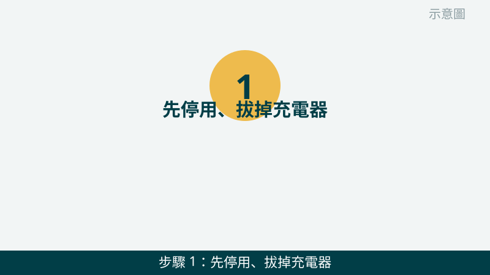
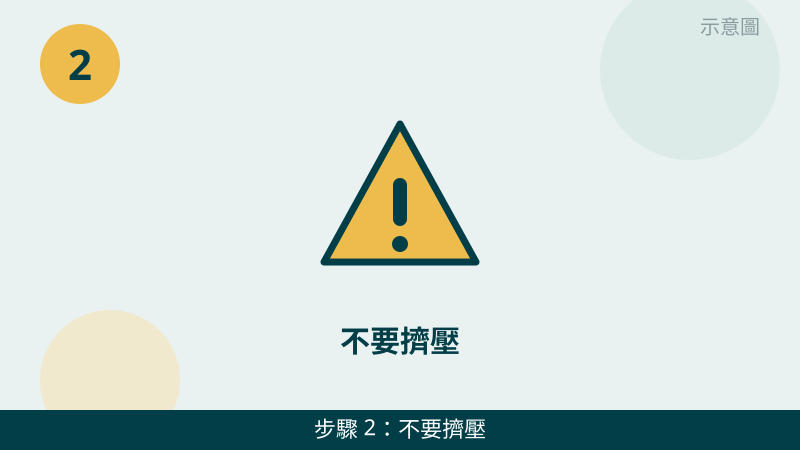
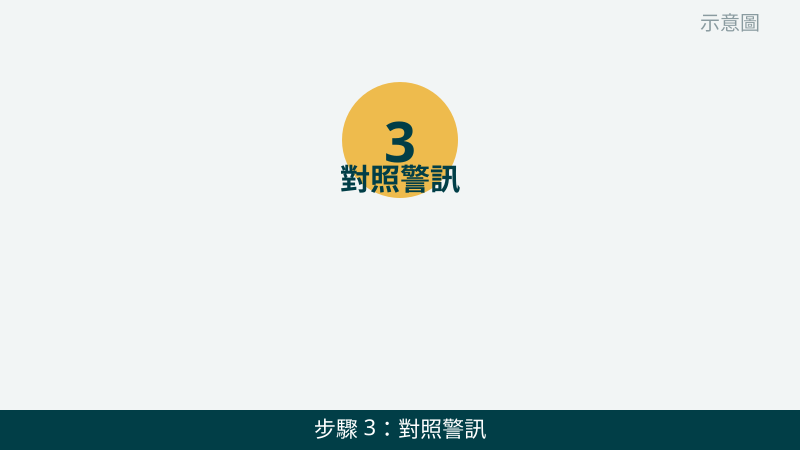
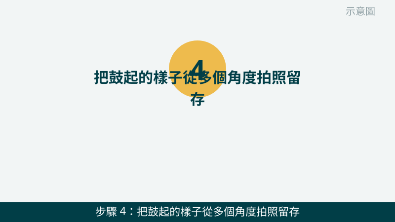
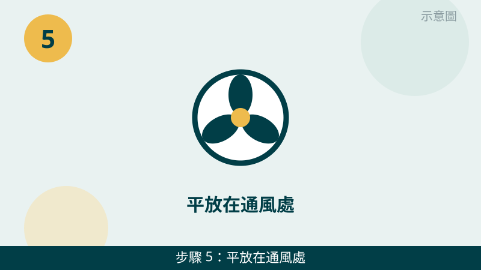

發現筆電底下鼓起來、放在桌上會搖晃，確實會讓人擔心。但請先放心：只要先停用、不要再擠壓或充電，就已經把風險降下來了。最怕的是覺得「還能用」就繼續充、繼續壓，鼓起只會越來越明顯。
開始之前先跟您說明一個判斷原則：「看起來鼓起來」本身就是警訊，不需要等到不能開機才處理。背蓋鼓起、觸控板隆起、螢幕邊框被頂開、鍵盤翹起，任何一個出現，都請先當成電池膨脹來處理，先拍照問我們。
鼓起的樣子先傳給我們看
把背蓋、觸控板、螢幕邊框的鼓起樣子拍下來傳 LINE，膨脹程度一看就知道。先免費評估、報價透明，確認後再預約維修。
電池膨脹自救檢查清單（由急到緩）
- 1. 先停用、拔掉充電器，不要再充電。請先把充電線拔掉，儲存好正在用的資料後關機，不要再接著充電、也不要想著把電用完再處理。怎麼判斷：充電燈熄了、沒有再接電源，就是停用了；只要還插著充電器，就還在給膨脹的電池加壓。

示意圖（非官方截圖） - 2. 不要擠壓、不要刺穿、不要按壓鼓起的地方。不要用手去壓鼓起來的地方試試看軟硬，也不要用尖銳物品去戳、去挑，更不要把筆電壓在重物下面想把它壓回去。怎麼判斷：只要您沒有去碰鼓起處，就是安全的；任何按壓、刺穿的動作都可能讓電池受損更嚴重。

示意圖（非官方截圖） - 3. 對照警訊：背蓋鼓起、觸控板隆起、螢幕邊框被頂開。請從側面看背蓋是不是合不攏、放在桌上會不會搖晃，再看觸控板是不是隆起來、按起來怪怪的，螢幕闔上時邊框有沒有被頂開。怎麼判斷：出現其中任何一項，就先當成電池膨脹處理；同時出現兩項以上，代表膨脹已經比較明顯，更不要拖。

示意圖（非官方截圖） - 4. 把鼓起的樣子從多個角度拍照留存。請從側面、背面、觸控板正面各拍一張，拍出鼓起的程度和位置，連同筆電型號標籤一起拍下來傳給我們。怎麼判斷：照片能清楚看出哪裡鼓、鼓多少，我們就能先給方向；照片模糊、只拍正面，通常看不出膨脹程度，會需要您再補拍。

示意圖（非官方截圖） - 5. 平放在通風處，不要放進密閉包包、不要堆重物在上面。把筆電平放在通風的桌面上，上面不要再壓書本或其他東西，也不要塞進密閉的包包裡繼續帶著走。怎麼判斷：放在平坦桌面上不再搖晃、上面沒有重物，就是暫時安放好了；這一步只是等待送修，不是處理完成。

示意圖（非官方截圖） - 6. 儘快拍照傳 LINE、預約送修，不要繼續使用、也不要丟一般垃圾。膨脹的電池不要丟一般垃圾，也不要自己拆下來丟掉。請把第 4 步的照片傳給我們，我們會先免費評估，再跟您約送修方式。怎麼判斷：如果鼓起越來越明顯、觸控板已經按不下去，代表更要優先送修；不確定時，也請先拍照問，不要自己拆。

示意圖（非官方截圖）
別再自己試了
- 電池鼓起來還繼續充電、繼續使用，想說用完再換——請先停用，不要再充電
- 想用手壓回去、用尖銳物品刺穿、自己拆電池
- 想把膨脹的電池丟一般垃圾——請先拍照問我們，不要自行丟棄
- 想自己拆機換電池但不確定怎麼拆——請先拍照問我們，不要硬拆，拆壞排線或弄斷卡扣反而更貴
常見問題
電池有點鼓起來，還可以繼續用嗎？
不建議繼續使用。電池膨脹代表內部已經不穩定，繼續充電或使用可能讓鼓起更嚴重，也可能傷到觸控板、鍵盤或螢幕邊框。請先停用、不要充電，把鼓起的樣子拍照傳給我們，我們會先免費評估，再跟您約送修方式。
膨脹的電池可以丟一般垃圾嗎？
不可以。膨脹的電池不要丟一般垃圾，也不要隨意堆放在家裡角落。請先不要擠壓、不要刺穿它，拍照問我們怎麼處理最妥當，送修時由我們協助您用正確的方式處理。
電池鼓起來的狀況拍照傳 LINE，就可以先判斷嗎？
可以先給方向。把背蓋鼓起、觸控板隆起或螢幕邊框被頂開的樣子拍下來傳給我們，通常能先看出膨脹的程度；要完全確認電池和周邊零件的狀況，還是需要實機檢測，這部分評估不收費，請放心傳。
相關文章：自救百科總覽